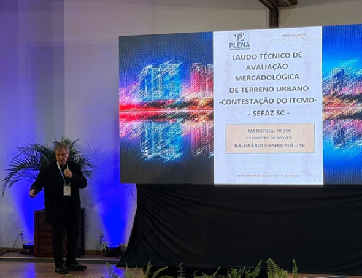
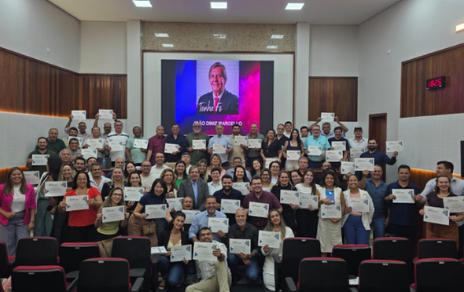
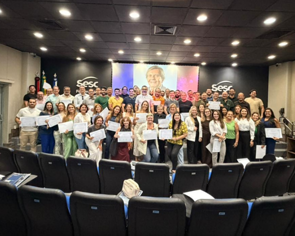
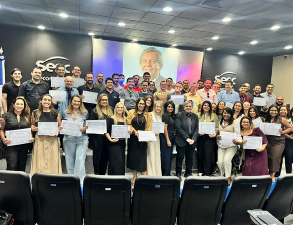

Cursos
Formações presenciais e online em avaliação imobiliária, perícias e atuação técnica profissional.
Cursos • Formação profissional • Avaliação imobiliária • Perícias
Cursos, modelos de laudos e livros técnicos para profissionais que atuam ou desejam atuar com avaliação imobiliária, perícias e pareceres técnicos.
Acompanhe no Instagram: @joaodinizmarcelloProdutos técnicos
Conteúdos desenvolvidos para apoiar a prática profissional em avaliações imobiliárias, perícias, pareceres técnicos e formação especializada.
Formações presenciais e online em avaliação imobiliária, perícias e atuação técnica profissional.
Modelos técnicos para orientar a estruturação de laudos, pareceres e documentos profissionais.
Materiais de estudo, consulta e aplicação prática para profissionais do mercado imobiliário.
Publicações técnicas na área de avaliações e perícias de imóveis.
Cursos e treinamentos
Os cursos do Professor João Diniz Marcello são voltados à capacitação de profissionais que desejam atuar com avaliação imobiliária, perícias judiciais, pareceres técnicos e elaboração de documentos profissionais.
Sobre o professor
João Diniz Marcello é professor, especialista em avaliação imobiliária, perícias e formação profissional. Sua trajetória é marcada pela capacitação de milhares de profissionais e pela produção de materiais técnicos voltados ao mercado imobiliário brasileiro.
Com atuação nacional em cursos, palestras e treinamentos, o Professor Diniz tornou-se referência para corretores, avaliadores, peritos e profissionais que buscam aperfeiçoamento técnico na elaboração de avaliações, laudos e pareceres.
Acompanhe o Professor no InstagramEventos e palestras




Contato
Entre em contato pelos canais oficiais do Professor João Diniz Marcello.
E-mail informado: professorjoaodiniz@gmail.com